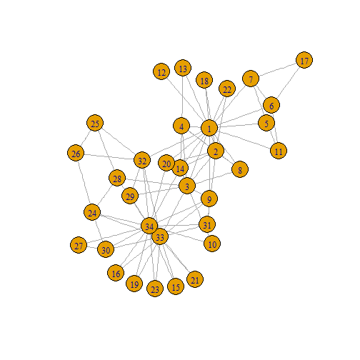
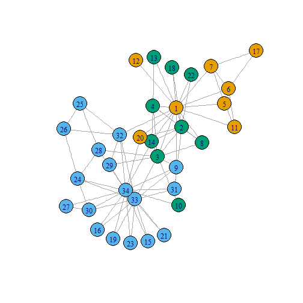

Dmitry Grapov, PhD
Data Scientist
library(igraph)
karate <- make_graph("Zachary")
karate$layout <- layout_with_kk(karate)
plot(karate)

fc <- cluster_fast_greedy(karate)
memb <- membership(fc)
plot(karate, vertex.color=memb)

edge.list<-data.frame(get.edgelist(karate,names=TRUE))
edge.list$ID<-"friends"
head(edge.list)
## X1 X2 ID
## 1 1 2 friends
## 2 1 3 friends
## 3 1 4 friends
## 4 1 5 friends
## 5 1 6 friends
## 6 1 7 friends
nodes<-as.matrix(V(karate))
node.data<-data.frame(ID=nodes,group=as.matrix(memb))
#add color
node.data$color<-rainbow(length(unique(node.data$group)))[factor(node.data$group)]
#add size based on centrality
#rescale to 20-60
library(scales)
node.data$size<-rescale(closeness(karate, mode="all"),to=c(10,40))
head(node.data)
## ID group color size
## 1 1 1 #FF0000FF 40.00000
## 2 2 3 #0000FFFF 31.17647
## 3 3 3 #0000FFFF 38.98305
## 4 4 3 #0000FFFF 29.01408
## 5 5 1 #FF0000FF 20.00000
## 6 6 1 #FF0000FF 20.46512
library(networkly)
#net params
layout<-"kamadakawai"
type<-"2d"
color<-'color'
size<-'size'
name<-'ID'
obj<-get_network(edge.list,type=type,layout=layout)
#create plotting attributes
net<-c(get_edges(obj,color=NULL,width=NULL,name=name,type=type,hoverinfo="none",showlegend=FALSE),
get_nodes(obj,node.data,color=color,size=size,name=name,
type=type,hoverinfo="ID",showlegend=FALSE),
get_text(obj,node.data,text=name,extra=list(textfont=list(size=20)),
type=type,yoff=-5,hoverinfo="none",showlegend=FALSE))
#visualize
shiny_ly(net)
legend<-c(format_legend(obj,nodes=FALSE,node.data=node.data,
width=NULL,size=NULL,name=name,color=NULL),#edge legend
format_legend(obj,edges=FALSE,node.data=node.data,
size=NULL,name=NULL,color="group")) #node legend
net2<-c(net,c(get_edges(legend,color=NULL,width=NULL,
name=name,type=type,hoverinfo="none",showlegend=TRUE),
get_nodes(legend,node.data=legend$node.data,color="group",size=NULL,
name="group",type=type,showlegend=TRUE,merge=FALSE)))
net<-shiny_ly(net2)
#visualize and add layout variables
plotly::layout(net,
xaxis = list(title = "", showgrid = FALSE, showticklabels = FALSE,
zeroline = FALSE, hoverformat = '.2f'),
yaxis = list(title = "", showgrid = FALSE, showticklabels = FALSE,
zeroline = FALSE, hoverformat = '.2f'))
#differences from 2D = **
#net params
node.data$size<-rescale(closeness(karate, mode="all"),to=c(2,15)) # resize nodes for 3D **
layout<-"kamadakawai"
type<-"3d" # **
color<-'color'
size<-'size'
name<-'ID'
obj<-get_network(edge.list,type=type,layout=layout)
#create plotting attributes
net<-c(get_edges(obj,color=NULL,width=NULL,name=name,type=type,hoverinfo="none",showlegend=FALSE),
get_nodes(obj,node.data,color=color,size=size,name=name,type=type,
hoverinfo="ID",showlegend=FALSE),
get_text(obj,node.data,text=name,extra=list(textfont=list(size=20)),
type=type,yoff=-5,hoverinfo="none",showlegend=FALSE))
legend<-c(format_legend(obj,nodes=FALSE,node.data=node.data,
width=NULL,size=NULL,name=name,color=NULL),#edge legend
format_legend(obj,edges=FALSE,node.data=node.data,
size=NULL,name=NULL,color="group")) #node legend
net2<-c(net,c(get_edges(legend,color=NULL,width=NULL,name=name,
type=type,hoverinfo="none",showlegend=TRUE),
get_nodes(legend,node.data=legend$node.data,color="group",
size=NULL,name="group",type=type,showlegend=TRUE,merge=FALSE)))
net<-shiny_ly(net2) # with legend
# ***
plotly::layout(net,scene = list(showlegend=TRUE,
yaxis=list(showgrid=FALSE,showticklabels=FALSE,zeroline=FALSE,title=""),
xaxis=list(showgrid=FALSE,showticklabels=FALSE,zeroline=FALSE,title=""),
zaxis=list(showgrid=FALSE,showticklabels=FALSE,zeroline=FALSE,title="")))
ui.RshinyUI(bootstrapPage(
plotlyOutput("network")
))
server.RshinyServer(function(session,input, output) {
output$network<-renderPlotly({
#network creation script goes here
#see above for how to create 2d or 3d networks
shiny_ly(net)
})
})
networkly::networklyShiny()
## R version 3.2.1 (2015-06-18)
## Platform: x86_64-w64-mingw32/x64 (64-bit)
## Running under: Windows 7 x64 (build 7601) Service Pack 1
##
## locale:
## [1] LC_COLLATE=English_United States.1252
## [2] LC_CTYPE=English_United States.1252
## [3] LC_MONETARY=English_United States.1252
## [4] LC_NUMERIC=C
## [5] LC_TIME=English_United States.1252
##
## attached base packages:
## [1] stats graphics grDevices utils datasets methods base
##
## other attached packages:
## [1] plotly_3.4.1 ggplot2_2.1.0 networkly_0.1 scales_0.3.0 igraph_1.0.1
##
## loaded via a namespace (and not attached):
## [1] Rcpp_0.12.3 slidify_0.5 knitr_1.12.3
## [4] whisker_0.3-2 magrittr_1.5 network_1.13.0
## [7] munsell_0.4.2 xtable_1.8-0 colorspace_1.2-6
## [10] R6_2.1.2 httr_1.1.0 stringr_1.0.0
## [13] plyr_1.8.3 dplyr_0.4.3 tools_3.2.1
## [16] parallel_3.2.1 grid_3.2.1 gtable_0.1.2
## [19] sna_2.3-2 DBI_0.3.1 htmltools_0.3
## [22] yaml_2.1.13 digest_0.6.9 assertthat_0.1
## [25] shiny_0.12.2.9009 gridExtra_2.0.0 tidyr_0.4.1
## [28] formatR_1.2.1 viridis_0.3.2 base64enc_0.1-3
## [31] htmlwidgets_0.5.2 evaluate_0.8 mime_0.4
## [34] stringi_1.0-1 jsonlite_0.9.19 httpuv_1.3.3
## [37] markdown_0.7.7